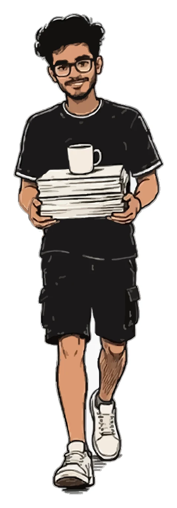

Feb 2026 to now

LeadSquared
Software Developer, Bangalore
- Work across Portals, Landing Pages Pro, Widgets and Custom Apps, contributing to system design and infrastructure cost optimization.
- Hardened Portals public authentication by replacing a static value baked into the website build with JWTs that expire after 10 minutes.
- Ran a self-initiated security audit, identifying 4 vulnerabilities across access control, payment flows, cryptography and API data exposure, and filed remediation reports.
- Built a real-time analytics pipeline for views, registrations and conversions, with metrics stored in Redis and shown on live dashboards.
- Fixed an AWS Lambda and CloudFront distribution limit that was causing publish failures in the page builder.
- Added OpenTelemetry structured logging across 3 .NET 8 services for centralized log aggregation.